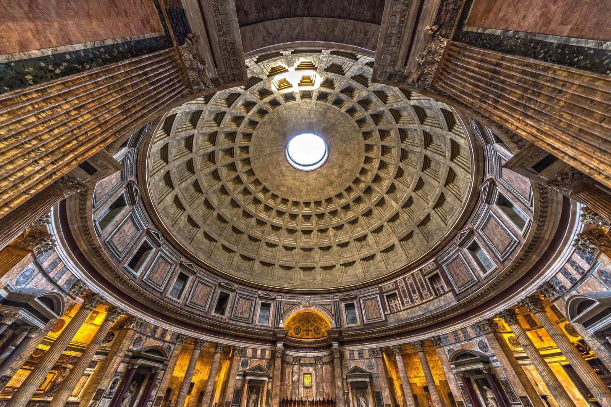

First Built (27 BCE - 25 BCE): The Pantheon was commissioned by Marcus Agrippa, the general and statesman under Emperor Augustus. However, the structure we see today was rebuilt by Emperor Hadrian around 118-125 CE after the original building was destroyed by fire.
Purpose: It was originally constructed as a temple dedicated to all the Roman gods, which is reflected in its name, "Pantheon" (from the Greek "pan" meaning "all" and "theos" meaning "god").
Conversion to a Church: In the 7th century, the Pantheon was consecrated as a Christian church, which helped preserve it through the centuries.
Architectural Features
Rotunda and Dome: The most notable feature of the Pantheon is its massive circular rotunda and the incredible dome, which is still the world’s largest unreinforced concrete dome. The dome's oculus, a 27-foot wide hole in the center, allows natural light to illuminate the interior and serves as a symbolic connection between the temple and the heavens.
Portico: The front of the Pantheon is adorned with a classical portico of 16 Corinthian columns made from Egyptian granite, with a bronze door that is over 1,000 years old.
Dimensions: The Pantheon is perfectly symmetrical, with both the height and diameter of the dome measuring 43.3 meters (142 feet), creating a sense of harmony and balance.

Visiting the Pantheon
The Pantheon is now a major tourist attraction and is open to the public for visits. It is also still used as a church, where regular masses are held.
The entrance is free, but visitors may choose to make a donation. It's open every day and remains a vibrant part of Rome's architectural and religious heritage.
Fun Facts
The Pantheon is considered one of the best-preserved ancient Roman buildings, and it remains an architectural and engineering marvel.
Its design has influenced countless buildings worldwide, including the U.S. Capitol and many other neoclassical buildings.